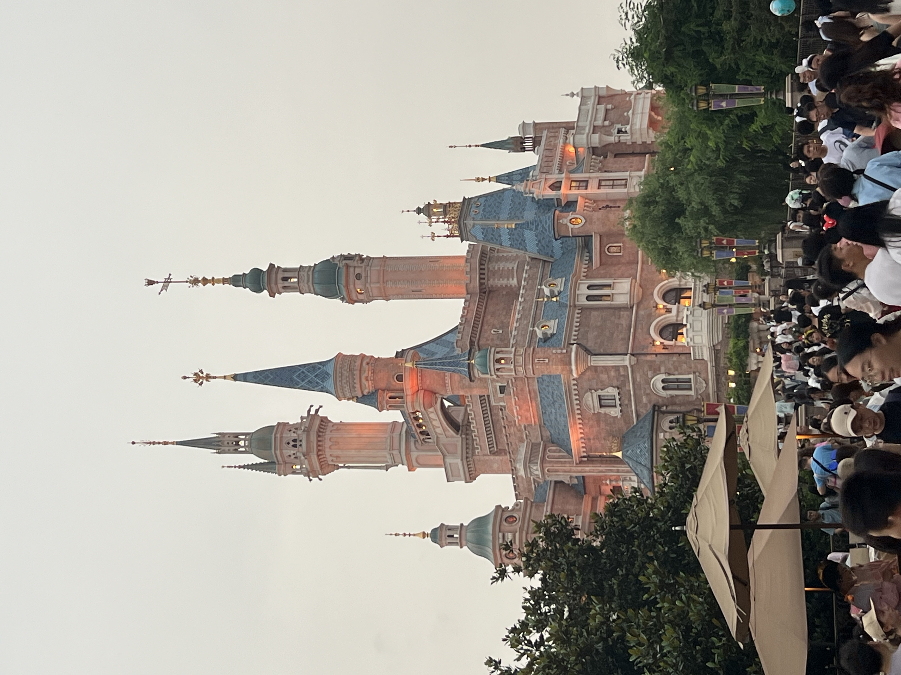
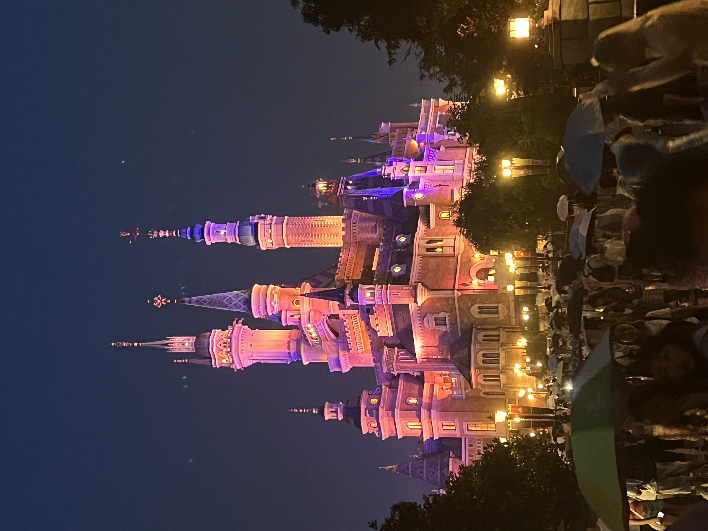
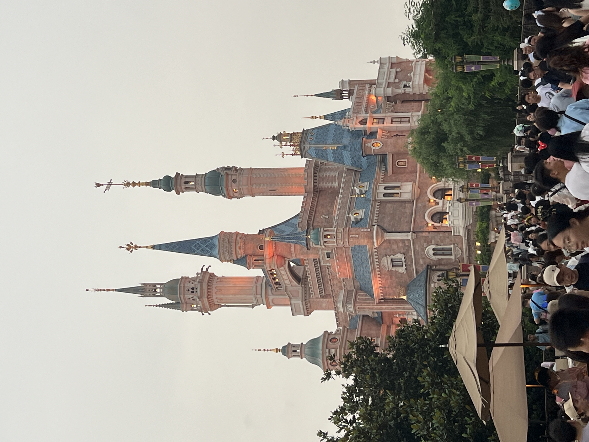
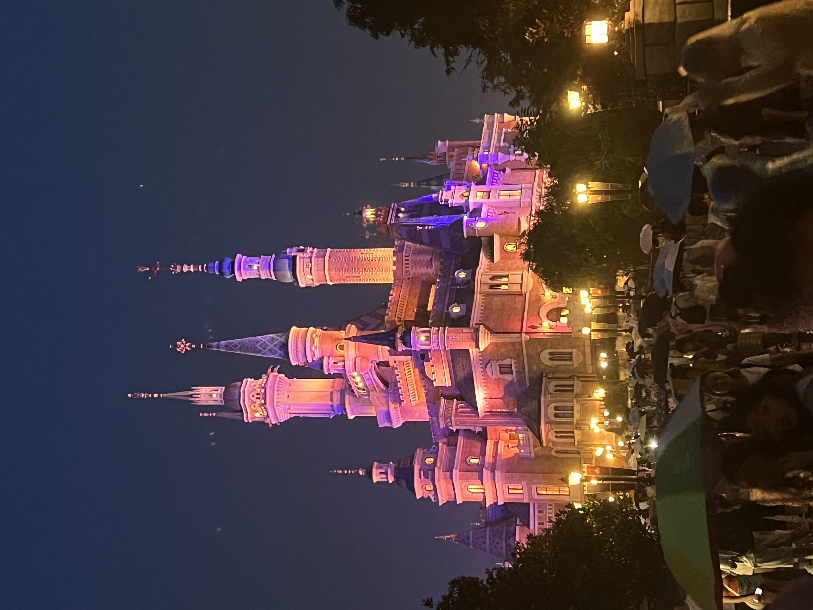

-
阅读了《智能计算系统》。
-
06/02 I have learned the basic the Mathematical Logic and the beginning of theory of graph. Learned basic compiler and some AI compiler.
06/03 I have installed Ubuntu in Win, LLVM, and MLIR.
06/05 Reviewed syntax of C++.
06/09 Installed the TVM. Start learning TVM.
06/11 学习AI编译器后端优化
06/12 复习了编译原理，还有一些其他的一些技术。TVM应该开始看了（了解到一个和周老师很相关的项目“在硬件设计流程中，MLIR（Multi-Level Intermediate Representation）和 CIRCT（Circuit IR Compilers and Tools）项目的结合提供了一种灵活和高效的方法来处理硬件描述和优化。”）
06/14 今天跑Polygeist跑不通，感觉是系统的问题。重新用Ubuntu搞了一下MLIR，太久了，（不是Win的问题，自己没搞好路径，well）。明天计划把Tianqi Chen的机器学习编译看完，然后把Toy Tutorial学一下
06/17 继续跑Polygeist，还得看SMR论文，陈天奇的MLC看了前两章，感觉全是TVM的东西，不知道还需不需要学，回头重新了解LLVM。
06/20 开始看了一本非常棒的数学书《现代数学的概念》
06/21 上午把Polygeist跑通了，中午去把那本书又看了一些
06/22 忙里偷闲把那本书看完了。
06/23 - 06/25 出去玩

 



-
07/01 看《生命密码》 有一个想法就是 特征是从图片到特征 而基因是从基因到表现出来 两者有一种互逆运算的感觉
-
08/06 shenduxuexi 框架第一节
08/15 下午参加了gogc大会，确实没什么用，回来看了一篇论文